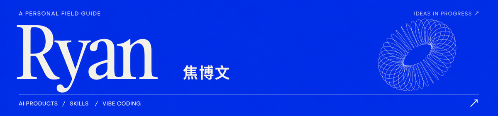
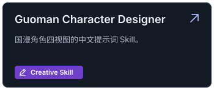
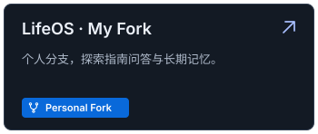
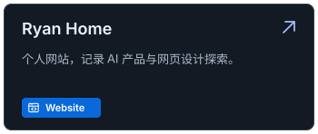
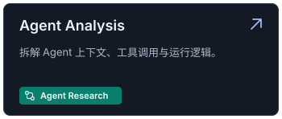
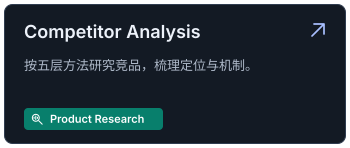
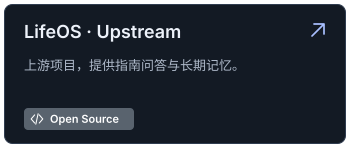

📂 Projects
     
🛠️ Working stack
Focus AI Products · Vibe Coding · Open Source · Writing
✍️ Writing & Sharing
01 从 Prompt 到 Context：一次 Agent 推理前，上下文究竟是怎么构建的？ ↗
03 聊聊模型评测：为什么你的大模型"跑分很高"，一上线就翻车？ ↗
公众号「碳基推理中」：用微信扫码关注，或在微信「搜一搜」中搜索名称。查看公众号二维码


欢迎交流 AI 产品、Vibe Coding 与 AI 对世界的改变。